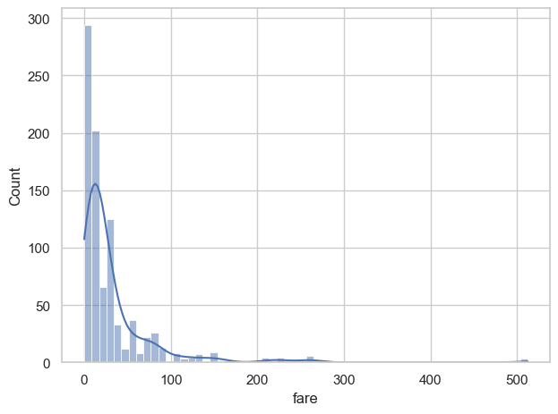
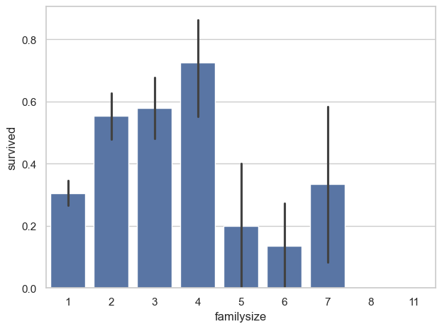
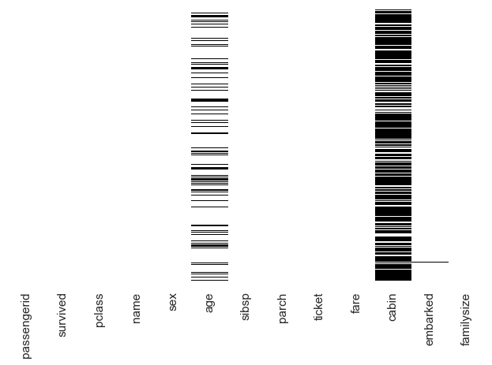
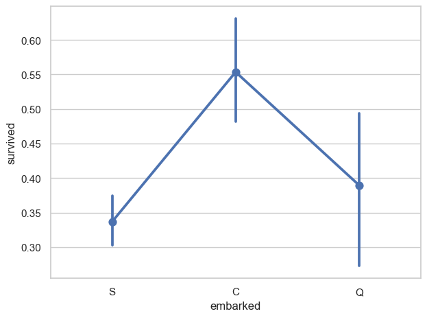
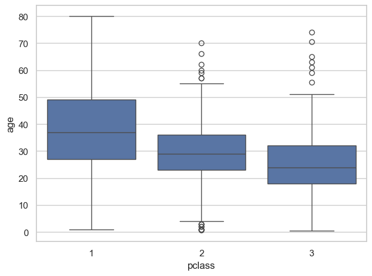
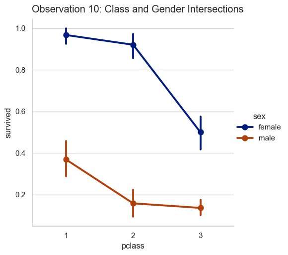

1. Survival Counts Baseline
2. Class Stratification Trends
3. Gender Performance Disparity
4. Passenger Age Density Profiles
5. Ticket Price Fare Skewness

6. Family Size Metric Scale

7. Data Sparsity Heatmap Matrix

8. Embarkation Port Variance

9. Grouped Imputation Guidance

10. Multivariate Feature Intersections
